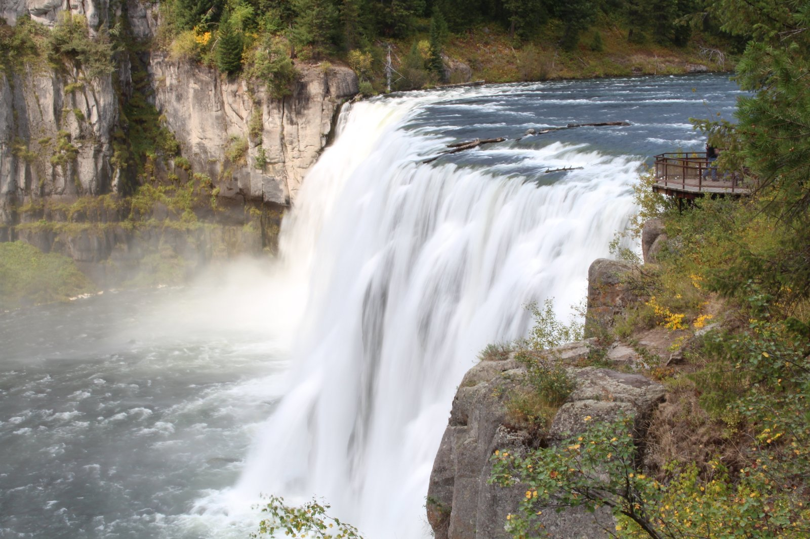
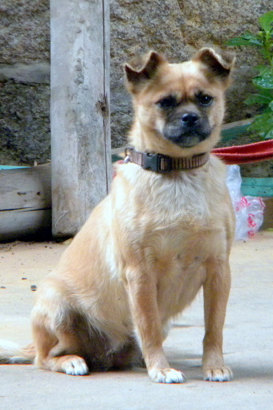

Photos
Back to Jun Chen's homepageHoover the mouse to enlarge.
Life

I have been there (as of June 2016)

Run @ Ames, IA, 2011-2015

Run @ Ames, IA, 2011-2015
Run @ Idaho Falls, ID, 2015
View
I have been there (as of June 2016)
Run @ Ames, IA, 2011-2015
Run @ Ames, IA, 2011-2015
Run @ Idaho Falls, ID, 2015


Sushi for dinner anyone?


Run wild with horses.
I have been there (as of June 2015)
Running
Run @ Ames, IA, 2011-2015
Run @ Idaho Falls, ID, 2015
Views
Fishing Cone, Yellowstone National Park (taken on August 9, 2015)

Morning Glory Pool, Yellowstone National Park (taken on August 9, 2015)

Upper Mesa Falls, Idaho (taken on August 27, 2015)

Coover Hall, Ames, IA (taken on Feburary 17, 2013), where I spent four years for my Ph.D. degree.

Lake Mendota, Madison, WI (taken on August 17, 2013), where 2013 IEEE CASE was held. It is taken by iPhone 4S running on iOS8.0, and this proves that for me iPhone works way better than SLR camera.

First Pet, 2002-2015, (taken on June 2011). She was born and abandoned, while my older brother decided to bring her home. She had 3 (?) babies.
